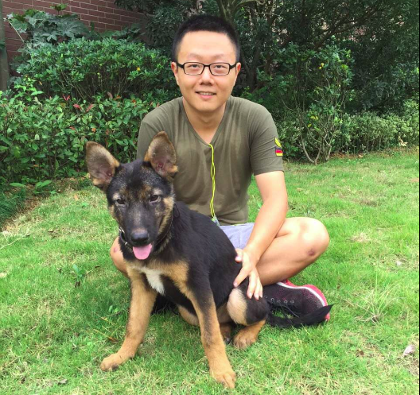
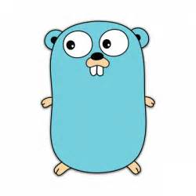

Leesper
front-end ninja

featured work

tao
https://github.com/leesper/tao

couchdb-golang
https://github.com/leesper/couchdb-golang

go_rng
https://github.com/leesper/go_rng
https://github.com/leesper/tao
https://github.com/leesper/couchdb-golang
https://github.com/leesper/go_rng